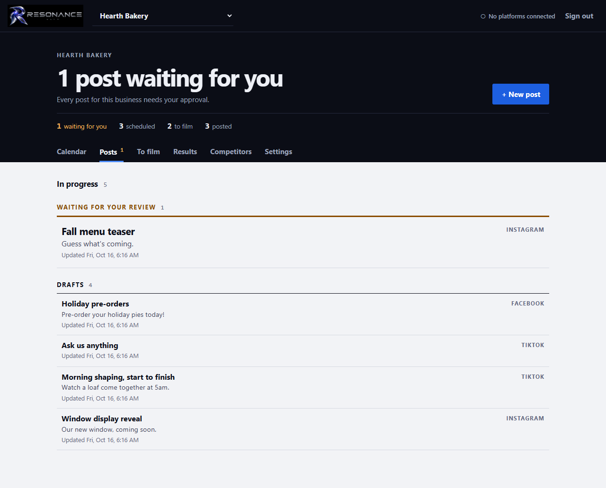
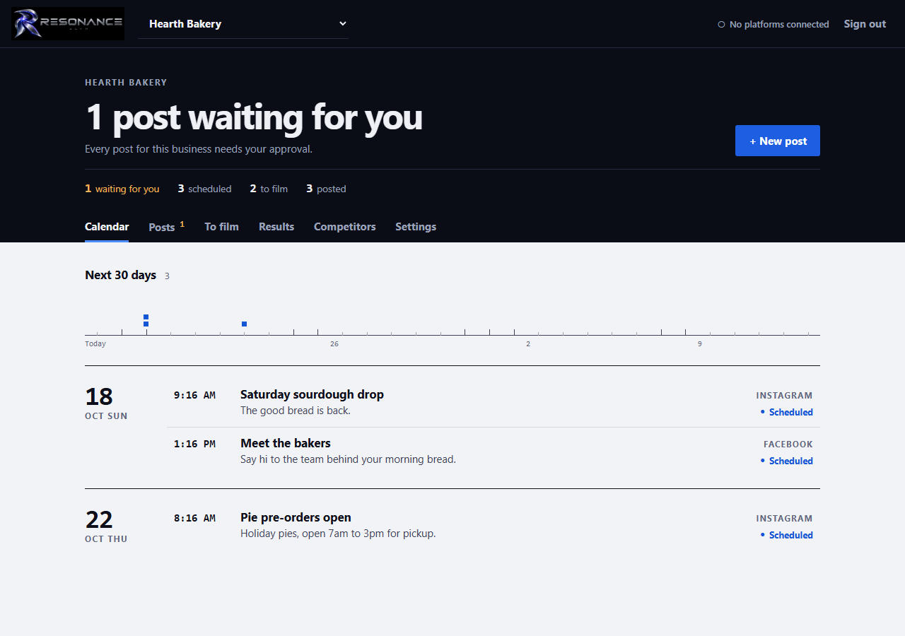

04 / 07 · Social media and content
Resonance
In development · ELVN OS
Make your voice easier to keep up with.
From the first idea to the post you approve, Resonance keeps your content work together. Give each business its own voice, plan what comes next and keep a clear view of what is ready.

A working rhythm for your content.
Ideas, drafts, approvals and results belong in the same conversation.
A voice for each business.
Separate business profiles hold the audience, tone, colors and approved facts that guide the work.
Move from draft to ready.
Plan posts on a calendar, make branded graphics and review the words before approving them. Missing required facts block approval.
Learn from what you put out.
Keep results alongside the posts. Connected platforms can return metrics; manually entered results stay clearly identified.
A closer look.
Real screens from the development build, using example information.




Where it stands.
Resonance is in development and is not publicly available. AI writing needs a configured AI provider. Automatic publishing needs the relevant platform connection and approval; neither is implied by these screenshots.
A product showcase. Public access is not open.